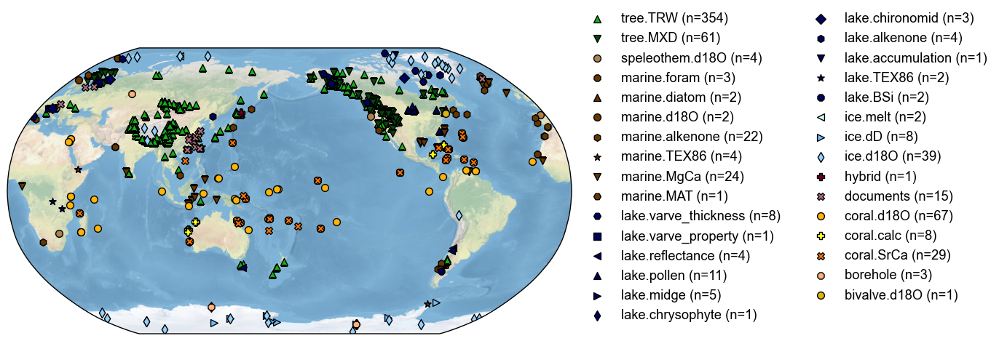
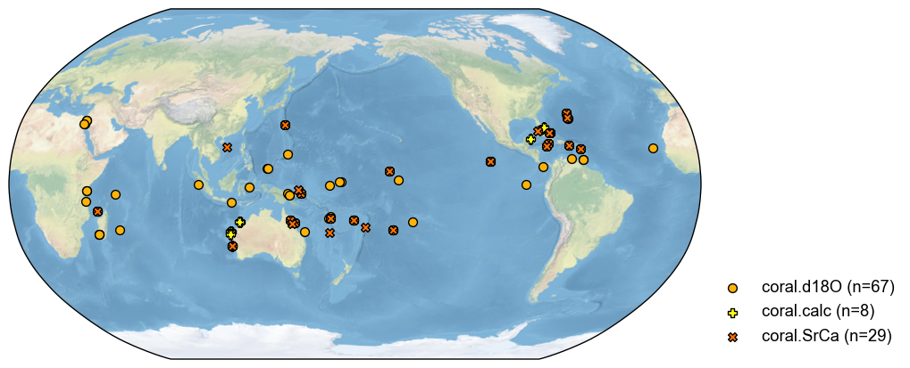
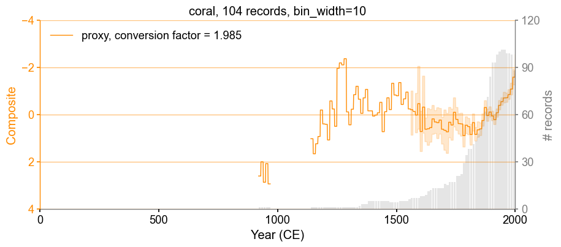
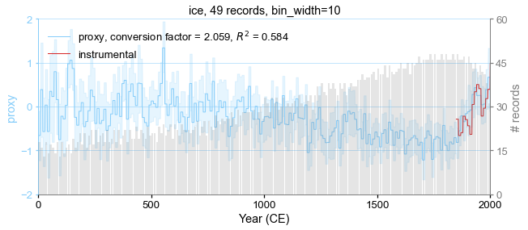

Composites#
In this tutorial, we introduce how to generate composites of proxies with cfr.
Required data to complete this tutorial:
HadCRUT5 analysis gridded data: HadCRUT.5.0.1.0.analysis.anomalies.ensemble_mean.nc
[1]:
%load_ext autoreload
%autoreload 2
import cfr
import pandas as pd
import os
os.chdir('/glade/u/home/fengzhu/Github/cfr/docsrc/notebooks/')
Load the PAGES2k network stored in a pandas DataFrame#
[2]:
df = pd.read_pickle('./data/pages2k_updated_Palmyra_dataset.pkl')
df.columns
[2]:
Index(['paleoData_pages2kID', 'dataSetName', 'archiveType', 'geo_meanElev',
'geo_meanLat', 'geo_meanLon', 'year', 'yearUnits',
'paleoData_variableName', 'paleoData_units', 'paleoData_values',
'paleoData_proxy'],
dtype='object')
Create a ProxyDatabase and load from the pandas DataFrame#
[3]:
pdb = cfr.ProxyDatabase().from_df(df)
fig, ax = pdb.plot()

Create composites for each proxy type#
We take corals as an example.
[4]:
pdb_corals = pdb.filter(by='ptype', keys='coral')
fig, ax = pdb_corals.plot()

Without calibration to an instrumental target#
[5]:
pdb_corals.make_composite(bin_width=10)
Analyzing ProxyRecord: 2%|▏ | 2/104 [00:00<00:05, 19.35it/s]/glade/work/fengzhu/conda-envs/cfr-env/lib/python3.9/site-packages/numpy/lib/function_base.py:518: RuntimeWarning: Mean of empty slice.
avg = a.mean(axis, **keepdims_kw)
/glade/work/fengzhu/conda-envs/cfr-env/lib/python3.9/site-packages/numpy/core/_methods.py:192: RuntimeWarning: invalid value encountered in scalar divide
ret = ret.dtype.type(ret / rcount)
Analyzing ProxyRecord: 17%|█▋ | 18/104 [00:00<00:00, 100.85it/s]/glade/work/fengzhu/conda-envs/cfr-env/lib/python3.9/site-packages/numpy/lib/function_base.py:518: RuntimeWarning: Mean of empty slice.
avg = a.mean(axis, **keepdims_kw)
/glade/work/fengzhu/conda-envs/cfr-env/lib/python3.9/site-packages/numpy/core/_methods.py:192: RuntimeWarning: invalid value encountered in scalar divide
ret = ret.dtype.type(ret / rcount)
/glade/work/fengzhu/conda-envs/cfr-env/lib/python3.9/site-packages/numpy/lib/function_base.py:518: RuntimeWarning: Mean of empty slice.
avg = a.mean(axis, **keepdims_kw)
/glade/work/fengzhu/conda-envs/cfr-env/lib/python3.9/site-packages/numpy/core/_methods.py:192: RuntimeWarning: invalid value encountered in scalar divide
ret = ret.dtype.type(ret / rcount)
Analyzing ProxyRecord: 100%|██████████| 104/104 [00:00<00:00, 258.66it/s]
/glade/work/fengzhu/conda-envs/cfr-env/lib/python3.9/site-packages/pandas/core/apply.py:907: RuntimeWarning: Mean of empty slice
results[i] = self.f(v)
Bootstrapping: 0%| | 0/110 [00:00<?, ?it/s]/glade/u/home/fengzhu/Github/cfr/cfr/utils.py:140: RuntimeWarning: Mean of empty slice
stats[i] = stat_func(samples[rand_ind])
Bootstrapping: 100%|██████████| 110/110 [00:04<00:00, 25.46it/s]
[6]:
fig, ax = pdb_corals.plot_composite(left_ylim=[4, -4])

With calibration to an instrumental target#
We load instrumental temperature observations as a target for scaling the proxy values.
[7]:
# check the variable and dimension names
import xarray as xr
ds = xr.open_dataset('./data/HadCRUT.5.0.1.0.analysis.anomalies.ensemble_mean.nc')
ds
[7]:
<xarray.Dataset>
Dimensions: (time: 2076, latitude: 36, longitude: 72, bnds: 2)
Coordinates:
* time (time) datetime64[ns] 1850-01-16T12:00:00 ... 2022-12-1...
* latitude (latitude) float64 -87.5 -82.5 -77.5 ... 77.5 82.5 87.5
* longitude (longitude) float64 -177.5 -172.5 -167.5 ... 172.5 177.5
realization int64 ...
Dimensions without coordinates: bnds
Data variables:
tas_mean (time, latitude, longitude) float64 ...
time_bnds (time, bnds) datetime64[ns] ...
latitude_bnds (latitude, bnds) float64 ...
longitude_bnds (longitude, bnds) float64 ...
realization_bnds (bnds) int64 ...
Attributes:
comment: 2m air temperature over land blended with sea water tempera...
history: Data set built at: 2023-01-10T22:32:59+00:00
institution: Met Office Hadley Centre / Climatic Research Unit, Universi...
licence: HadCRUT5 is licensed under the Open Government Licence v3.0...
reference: C. P. Morice, J. J. Kennedy, N. A. Rayner, J. P. Winn, E. H...
source: CRUTEM.5.0.1.0 HadSST.4.0.0.0
title: HadCRUT.5.0.1.0 blended land air temperature and sea-surfac...
version: HadCRUT.5.0.1.0
Conventions: CF-1.7[9]:
obs = cfr.ClimateField().load_nc(
'./data/HadCRUT.5.0.1.0.analysis.anomalies.ensemble_mean.nc',
vn='tas_mean', lat_name='latitude', lon_name='longitude',
)
obs = obs.rename('tas')
fig, ax = obs[-1].plot()

[15]:
pdb_corals.make_composite(obs, bin_width=10)
Analyzing ProxyRecord: 15%|█▌ | 16/104 [00:03<00:18, 4.79it/s]/glade/work/fengzhu/conda-envs/cfr-env/lib/python3.9/site-packages/numpy/lib/function_base.py:518: RuntimeWarning: Mean of empty slice.
avg = a.mean(axis, **keepdims_kw)
/glade/work/fengzhu/conda-envs/cfr-env/lib/python3.9/site-packages/numpy/core/_methods.py:192: RuntimeWarning: invalid value encountered in scalar divide
ret = ret.dtype.type(ret / rcount)
Analyzing ProxyRecord: 20%|██ | 21/104 [00:04<00:17, 4.77it/s]/glade/work/fengzhu/conda-envs/cfr-env/lib/python3.9/site-packages/numpy/lib/function_base.py:518: RuntimeWarning: Mean of empty slice.
avg = a.mean(axis, **keepdims_kw)
/glade/work/fengzhu/conda-envs/cfr-env/lib/python3.9/site-packages/numpy/core/_methods.py:192: RuntimeWarning: invalid value encountered in scalar divide
ret = ret.dtype.type(ret / rcount)
Analyzing ProxyRecord: 39%|███▉ | 41/104 [00:08<00:13, 4.71it/s]/glade/work/fengzhu/conda-envs/cfr-env/lib/python3.9/site-packages/numpy/lib/function_base.py:518: RuntimeWarning: Mean of empty slice.
avg = a.mean(axis, **keepdims_kw)
/glade/work/fengzhu/conda-envs/cfr-env/lib/python3.9/site-packages/numpy/core/_methods.py:192: RuntimeWarning: invalid value encountered in scalar divide
ret = ret.dtype.type(ret / rcount)
Analyzing ProxyRecord: 100%|██████████| 104/104 [00:21<00:00, 4.73it/s]
/glade/work/fengzhu/conda-envs/cfr-env/lib/python3.9/site-packages/pandas/core/apply.py:907: RuntimeWarning: Mean of empty slice
results[i] = self.f(v)
Bootstrapping: 0%| | 0/110 [00:00<?, ?it/s]/glade/u/home/fengzhu/Github/cfr/cfr/utils.py:140: RuntimeWarning: Mean of empty slice
stats[i] = stat_func(samples[rand_ind])
Bootstrapping: 100%|██████████| 110/110 [00:04<00:00, 26.96it/s]
[16]:
# Check the composite infomation:
print('proxy_comp:\n', pdb_corals.composite['proxy_comp'].index)
print('proxy_num:\n', pdb_corals.composite['proxy_num'])
print('df_obs:\n', pdb_corals.composite['df_obs'])
print('slope:\n', pdb_corals.composite['slope'])
print('intercept:\n', pdb_corals.composite['intercept'])
proxy_comp:
Float64Index([ 925.0, 935.0, 945.0, 955.0, 965.0, 975.0, 985.0, 995.0,
1005.0, 1015.0,
...
1925.0, 1935.0, 1945.0, 1955.0, 1965.0, 1975.0, 1985.0, 1995.0,
2005.0, 2015.0],
dtype='float64', length=110)
proxy_num:
[ 1. 1. 1. 1. 1. 0. 0. 0. 0. 0. 0. 0. 0. 0.
0. 0. 0. 0. 0. 0. 0. 0. 1. 1. 1. 1. 1. 1.
1. 1. 1. 1. 1. 1. 1. 1. 1. 1. 1. 1. 1. 1.
2. 3. 3. 3. 5. 5. 5. 5. 5. 5. 5. 5. 5. 4.
4. 4. 4. 5. 5. 5. 5. 6. 7. 7. 7. 7. 8. 8.
9. 11. 12. 13. 13. 13. 13. 13. 16. 15. 17. 17. 17. 21.
21. 22. 29. 34. 38. 38. 41. 43. 48. 51. 56. 62. 71. 84.
93. 93. 98. 100. 101. 101. 99. 99. 98. 88. 26. 8.]
df_obs:
Ocn_065 Ocn_075 Ocn_078 Ocn_167 Ocn_091 Ocn_093 Ocn_096 \
1855.0 -0.078002 NaN NaN -0.205589 NaN NaN NaN
1865.0 -0.107282 -0.411357 NaN NaN NaN NaN NaN
1875.0 -0.069256 NaN NaN NaN NaN NaN NaN
1885.0 -0.167440 -0.293635 NaN -0.343136 NaN NaN -0.235500
1895.0 -0.307275 -0.263564 NaN -0.357457 -0.017921 -0.017921 NaN
1905.0 -0.427641 -0.295720 -0.477541 -0.336948 -0.499484 -0.499484 -0.251661
1915.0 -0.353616 -0.353642 -0.404239 -0.303997 -0.385642 -0.385642 NaN
1925.0 -0.007981 -0.215696 -0.231768 -0.243615 -0.203692 -0.203692 -0.178444
1935.0 0.081627 -0.230150 -0.178130 -0.255383 -0.181764 -0.181764 -0.194397
1945.0 0.108087 0.067905 0.041306 -0.134179 -0.115930 -0.115930 0.038444
1955.0 -0.048694 -0.150163 -0.095860 0.028338 -0.069165 -0.069165 -0.025822
1965.0 -0.100463 -0.232314 -0.147204 -0.099432 -0.175826 -0.175826 -0.169241
1975.0 0.013478 0.003847 -0.015949 -0.021495 0.127029 0.127029 0.172228
1985.0 0.156720 0.173390 0.118942 0.151294 0.117000 0.117000 0.045851
1995.0 0.400384 0.336906 0.236005 0.367082 0.125404 0.125404 0.243892
2005.0 0.332481 0.536344 0.339151 0.470025 0.545965 0.545965 0.476881
2015.0 0.669136 0.831119 0.576251 0.745144 0.560249 0.560249 0.550467
2025.0 0.969154 0.689554 0.780034 0.861928 0.825713 0.825713 0.968467
Ocn_086 Ocn_101 Ocn_070 ... Ocn_090 Ocn_119 Ocn_109 \
1855.0 NaN NaN -0.036022 ... NaN NaN NaN
1865.0 NaN NaN 0.228898 ... NaN NaN NaN
1875.0 NaN NaN 0.060659 ... NaN NaN NaN
1885.0 -0.156775 NaN -0.062139 ... NaN NaN NaN
1895.0 -0.307884 NaN -0.347920 ... NaN NaN -0.357971
1905.0 -0.297574 NaN -0.488638 ... NaN NaN -0.448553
1915.0 -0.258138 -0.441400 -0.443611 ... -0.282402 -0.386272 -0.378508
1925.0 -0.026011 -0.340216 -0.165828 ... -0.157599 -0.173787 -0.119391
1935.0 0.118868 -0.342152 -0.059643 ... -0.046964 -0.000825 -0.168527
1945.0 -0.142440 -0.016425 0.097489 ... -0.142528 NaN 0.074254
1955.0 0.033336 0.007120 -0.052192 ... -0.087915 0.083237 -0.041556
1965.0 -0.105926 -0.221945 -0.036882 ... -0.176294 -0.070780 -0.148954
1975.0 -0.037005 0.085508 -0.049525 ... -0.044368 0.011463 0.109753
1985.0 0.080488 0.091893 0.078563 ... 0.149136 0.116943 0.089410
1995.0 0.111560 0.228314 0.328462 ... 0.226947 0.383008 0.235536
2005.0 0.230500 0.345507 0.296928 ... 0.463342 0.396233 0.550538
2015.0 0.516225 0.439639 0.585526 ... 0.614403 0.622542 0.588246
2025.0 0.625364 0.899565 0.918771 ... 0.892957 0.622194 0.772840
Ocn_097 Ocn_159 Ocn_087 Ocn_153 Ocn_169 Ocn_071 Ocn_072
1855.0 NaN NaN NaN NaN -0.124460 -0.057067 -0.057067
1865.0 NaN NaN NaN NaN NaN NaN NaN
1875.0 NaN NaN NaN NaN NaN NaN NaN
1885.0 NaN NaN NaN -0.650625 NaN NaN NaN
1895.0 NaN NaN NaN -0.448504 -0.385324 -0.352457 -0.352457
1905.0 NaN NaN NaN -0.590030 -0.302197 -0.241020 -0.241020
1915.0 -0.296292 -0.386272 -0.285957 -0.428159 -0.365019 -0.327906 -0.327906
1925.0 -0.154915 -0.173787 -0.370671 -0.389576 -0.337369 -0.220641 -0.220641
1935.0 -0.034458 -0.000825 -0.052273 -0.284132 -0.037596 0.019260 0.019260
1945.0 -0.157033 NaN NaN -0.023910 0.156792 0.194008 0.194008
1955.0 -0.120586 0.083237 -0.043128 -0.269210 -0.009653 0.000416 0.000416
1965.0 -0.196732 -0.070780 -0.267265 -0.183740 -0.059642 -0.016300 -0.016300
1975.0 -0.043380 0.011463 -0.091441 -0.019263 -0.089854 -0.158615 -0.158615
1985.0 0.154048 0.116943 0.284636 0.164937 0.195618 0.186119 0.186119
1995.0 0.145717 0.383008 0.526384 0.244548 0.413396 0.424772 0.424772
2005.0 0.398888 0.396233 0.325635 0.227715 0.569829 0.486187 0.486187
2015.0 0.561737 0.622542 0.649129 0.569747 0.757358 0.632914 0.632914
2025.0 0.977092 0.622194 0.097743 0.533054 0.719499 0.631455 0.631455
[18 rows x 104 columns]
slope:
-0.6464239809668083
intercept:
-0.17071413691563872
[17]:
fig, ax = pdb_corals.plot_composite()
cfr.showfig(fig)
cfr.savefig(fig, './figs/coral_composites.pdf')

Figure saved at: "figs/coral_composites.pdf"
The composite of ice core records#
[18]:
pdb_ice = pdb.filter(by='ptype', keys='ice')
fig, ax = pdb_ice.plot()

[19]:
pdb_ice.make_composite(
obs_nc_path='./data/HadCRUT.5.0.1.0.analysis.anomalies.ensemble_mean.nc',
vn='tas_mean',
lat_name='latitude', lon_name='longitude',
bin_width=10,
)
Analyzing ProxyRecord: 18%|█▊ | 9/49 [00:01<00:08, 4.66it/s]/glade/work/fengzhu/conda-envs/cfr-env/lib/python3.9/site-packages/numpy/lib/function_base.py:518: RuntimeWarning: Mean of empty slice.
avg = a.mean(axis, **keepdims_kw)
/glade/work/fengzhu/conda-envs/cfr-env/lib/python3.9/site-packages/numpy/core/_methods.py:192: RuntimeWarning: invalid value encountered in scalar divide
ret = ret.dtype.type(ret / rcount)
Analyzing ProxyRecord: 43%|████▎ | 21/49 [00:04<00:06, 4.64it/s]/glade/work/fengzhu/conda-envs/cfr-env/lib/python3.9/site-packages/numpy/lib/function_base.py:518: RuntimeWarning: Mean of empty slice.
avg = a.mean(axis, **keepdims_kw)
/glade/work/fengzhu/conda-envs/cfr-env/lib/python3.9/site-packages/numpy/core/_methods.py:192: RuntimeWarning: invalid value encountered in scalar divide
ret = ret.dtype.type(ret / rcount)
Analyzing ProxyRecord: 63%|██████▎ | 31/49 [00:06<00:03, 4.58it/s]/glade/work/fengzhu/conda-envs/cfr-env/lib/python3.9/site-packages/numpy/lib/function_base.py:518: RuntimeWarning: Mean of empty slice.
avg = a.mean(axis, **keepdims_kw)
/glade/work/fengzhu/conda-envs/cfr-env/lib/python3.9/site-packages/numpy/core/_methods.py:192: RuntimeWarning: invalid value encountered in scalar divide
ret = ret.dtype.type(ret / rcount)
Analyzing ProxyRecord: 65%|██████▌ | 32/49 [00:06<00:03, 4.60it/s]/glade/work/fengzhu/conda-envs/cfr-env/lib/python3.9/site-packages/numpy/lib/function_base.py:518: RuntimeWarning: Mean of empty slice.
avg = a.mean(axis, **keepdims_kw)
/glade/work/fengzhu/conda-envs/cfr-env/lib/python3.9/site-packages/numpy/core/_methods.py:192: RuntimeWarning: invalid value encountered in scalar divide
ret = ret.dtype.type(ret / rcount)
Analyzing ProxyRecord: 73%|███████▎ | 36/49 [00:07<00:02, 4.60it/s]/glade/work/fengzhu/conda-envs/cfr-env/lib/python3.9/site-packages/numpy/lib/function_base.py:518: RuntimeWarning: Mean of empty slice.
avg = a.mean(axis, **keepdims_kw)
/glade/work/fengzhu/conda-envs/cfr-env/lib/python3.9/site-packages/numpy/core/_methods.py:192: RuntimeWarning: invalid value encountered in scalar divide
ret = ret.dtype.type(ret / rcount)
Analyzing ProxyRecord: 88%|████████▊ | 43/49 [00:09<00:01, 4.66it/s]/glade/work/fengzhu/conda-envs/cfr-env/lib/python3.9/site-packages/numpy/lib/function_base.py:518: RuntimeWarning: Mean of empty slice.
avg = a.mean(axis, **keepdims_kw)
/glade/work/fengzhu/conda-envs/cfr-env/lib/python3.9/site-packages/numpy/core/_methods.py:192: RuntimeWarning: invalid value encountered in scalar divide
ret = ret.dtype.type(ret / rcount)
Analyzing ProxyRecord: 100%|██████████| 49/49 [00:10<00:00, 4.61it/s]
Bootstrapping: 0%| | 0/207 [00:00<?, ?it/s]/glade/u/home/fengzhu/Github/cfr/cfr/utils.py:140: RuntimeWarning: Mean of empty slice
stats[i] = stat_func(samples[rand_ind])
Bootstrapping: 100%|██████████| 207/207 [00:07<00:00, 26.74it/s]
[20]:
# Check the composite infomation:
print('proxy_comp:\n', pdb_ice.composite['proxy_comp'].index)
print('proxy_num:\n', pdb_ice.composite['proxy_num'])
print('df_obs:\n', pdb_ice.composite['df_obs'])
print('slope:\n', pdb_ice.composite['slope'])
print('intercept:\n', pdb_ice.composite['intercept'])
proxy_comp:
Float64Index([ -45.0, -35.0, -25.0, -15.0, -5.0, 5.0, 15.0, 25.0,
35.0, 45.0,
...
1925.0, 1935.0, 1945.0, 1955.0, 1965.0, 1975.0, 1985.0, 1995.0,
2005.0, 2015.0],
dtype='float64', length=207)
proxy_num:
[ 2. 2. 3. 3. 3. 18. 16. 13. 18. 14. 17. 16. 14. 18. 13. 18. 14. 16.
17. 14. 19. 16. 18. 21. 17. 21. 16. 20. 22. 17. 22. 18. 20. 21. 18. 22.
18. 19. 22. 18. 22. 17. 20. 22. 18. 22. 19. 19. 23. 19. 22. 21. 19. 23.
20. 21. 21. 18. 23. 21. 24. 20. 22. 24. 19. 24. 22. 20. 24. 22. 22. 22.
21. 22. 23. 25. 20. 23. 25. 20. 25. 23. 22. 27. 25. 24. 26. 25. 26. 26.
28. 26. 24. 29. 27. 28. 28. 28. 28. 28. 29. 26. 28. 30. 26. 33. 31. 28.
33. 31. 33. 29. 30. 33. 30. 31. 30. 31. 32. 30. 34. 31. 30. 34. 32. 34.
29. 34. 37. 34. 38. 35. 34. 38. 36. 38. 36. 34. 38. 36. 38. 34. 36. 38.
37. 37. 39. 39. 41. 39. 40. 40. 41. 42. 39. 43. 41. 41. 44. 40. 44. 42.
41. 42. 43. 45. 43. 43. 45. 41. 45. 44. 45. 47. 45. 46. 46. 46. 48. 46.
48. 46. 46. 48. 46. 48. 46. 46. 48. 46. 48. 46. 46. 47. 45. 47. 45. 43.
45. 42. 44. 42. 41. 38. 31. 11. 2.]
df_obs:
Ant_023 Ant_024 Asi_243 Ant_012 Ant_020 Arc_029 Arc_035 \
1855.0 NaN NaN NaN NaN NaN NaN -0.544404
1865.0 NaN NaN NaN NaN NaN NaN -1.502903
1875.0 NaN NaN NaN NaN NaN NaN -0.258968
1885.0 NaN NaN 0.139995 NaN NaN NaN -1.165765
1895.0 NaN NaN -0.118933 NaN NaN NaN -0.901769
1905.0 NaN NaN -0.369459 NaN NaN NaN -0.423163
1915.0 NaN NaN -0.175235 NaN NaN NaN -0.415551
1925.0 NaN NaN -0.018831 NaN NaN NaN 0.422681
1935.0 NaN NaN -0.057067 NaN NaN 0.982628 0.938740
1945.0 NaN NaN 0.236839 NaN NaN 0.605695 0.881770
1955.0 NaN NaN 0.168506 NaN NaN 0.482568 0.531032
1965.0 -0.313322 -0.254678 -0.196634 -0.341578 -0.291192 0.043077 0.411174
1975.0 -0.048645 0.048729 0.050542 0.085363 0.074353 -0.205496 -0.082302
1985.0 0.250237 0.089260 0.159978 0.166971 0.081973 0.137414 -0.202886
1995.0 0.113013 -0.000761 0.513645 0.007126 -0.016603 0.697608 -0.035937
2005.0 0.299738 0.373660 1.225578 0.181132 0.019020 1.511603 1.337034
2015.0 0.581113 0.690693 1.341981 0.409122 0.289375 2.538029 1.494854
2025.0 0.595227 0.358569 1.180095 0.430910 0.211690 2.778864 1.511966
Ant_001 Ant_006 Ant_022 ... Ant_017 Arc_072 Arc_005 \
1855.0 NaN NaN NaN ... NaN -0.280897 NaN
1865.0 NaN NaN NaN ... NaN -0.670608 NaN
1875.0 NaN NaN NaN ... NaN -0.585217 NaN
1885.0 NaN NaN NaN ... NaN -0.660067 -1.021925
1895.0 NaN NaN NaN ... NaN -0.562983 -0.988451
1905.0 NaN NaN NaN ... NaN -0.417878 -0.421623
1915.0 NaN NaN NaN ... NaN -1.320367 -0.896916
1925.0 NaN NaN NaN ... NaN 0.060131 0.202105
1935.0 NaN NaN NaN ... NaN 0.981169 0.843957
1945.0 NaN NaN NaN ... NaN 0.236257 0.611468
1955.0 NaN NaN NaN ... NaN 0.802106 0.256081
1965.0 -0.267722 -0.349686 -0.267722 ... -0.392996 -0.407866 0.320030
1975.0 -0.075961 NaN -0.075961 ... NaN 0.204257 -0.309642
1985.0 0.228602 NaN 0.228602 ... NaN 0.049942 0.021850
1995.0 0.067558 NaN 0.067558 ... NaN 0.754574 0.284505
2005.0 0.158230 NaN 0.158230 ... NaN 1.515841 1.444607
2015.0 0.323441 0.688752 0.323441 ... 0.659774 2.208421 2.110374
2025.0 0.420035 0.494612 0.420035 ... 0.891619 2.383328 2.566972
Ant_019 Ant_014 Arc_018 Ant_025 Ant_004 Ant_021 Ant_026
1855.0 NaN NaN -0.292929 NaN NaN NaN NaN
1865.0 NaN NaN -0.650675 NaN NaN NaN NaN
1875.0 NaN NaN -0.600465 NaN NaN NaN NaN
1885.0 NaN NaN -0.653229 NaN NaN NaN NaN
1895.0 NaN NaN -0.552476 NaN NaN NaN NaN
1905.0 NaN NaN -0.400410 NaN NaN NaN NaN
1915.0 NaN NaN -1.298685 NaN NaN NaN NaN
1925.0 NaN NaN 0.085491 NaN NaN NaN NaN
1935.0 NaN NaN 0.992762 NaN NaN NaN NaN
1945.0 NaN NaN 0.266806 NaN NaN NaN NaN
1955.0 NaN NaN 0.835667 NaN NaN NaN NaN
1965.0 -0.298497 -0.385644 -0.436804 -0.312661 -0.352912 -0.298170 -0.379588
1975.0 -0.056960 -0.006243 0.231445 -0.049492 -0.018038 0.052657 0.015876
1985.0 0.276860 0.211112 0.051274 0.254946 0.203027 0.095440 0.139570
1995.0 0.165074 -0.073291 0.760437 0.137430 0.219234 0.015530 -0.135029
2005.0 0.334288 0.415313 1.557320 0.312354 0.203737 0.088824 0.516788
2015.0 NaN 0.428496 2.293309 NaN 0.279991 0.308260 0.388682
2025.0 NaN 0.667534 2.463304 NaN 0.326596 0.245133 0.709142
[18 rows x 49 columns]
slope:
2.135648475686733
intercept:
-0.4225690834912596
[21]:
fig, ax = pdb_ice.plot_composite()
cfr.showfig(fig)
cfr.savefig(fig, './figs/ice_composite.pdf')

Figure saved at: "figs/ice_composite.pdf"
[ ]: